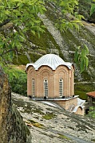

Disclaimer: These pages are not actively maintained, and some of the practical information on the site is out of date. I am working on a new version of the site that will focus more on my photos and memories of travel in Southeast Europe, and less on practical details that too easily become obsolete. In the meantime, please treat the information here with caution.
Pelagonian landscapes
Pelagonia: Prilep, Bitola, and Kruševo
The Pelagonia region is in southwestern Macedonia. Although it sees far fewer tourists than nearby Ohrid, it has a varied range of natural and man-made attractions that make it a strong candidate for inclusion in any tour of Macedonia. The region is easily visited in between Ohrid and Skopje as it has good transport links to both.
Prilep Bazaar and Clock Tower
Markovi Kuli, near Prilep

Archangel Michael Monastery,
Varoš,near Prilep

Treskavec Monastery
and Mount Zlato
Prilep
At first sight Prilep may seem to be an unlikely destination for travellers. This modest town, set in a rather odd landscape of bare outcrops and sculpted rocks, makes its living from tobacco rather than tourism. Nevertheless its ease of access and proximity to a number of sights of interest make it worth considering as a stopover for a night or three.
Central Prilep doesn't take long to see. Surrounded by the usual featureless concrete is an attractive but tiny bazaar area. In contrast to the crooked streets of Skopje and Bitola, Prilep's bazaar is laid out according to a strictly rectilinear grid system. It is overlooked by a pretty clock tower, beside which are the burnt-out remains of a mosque - a sad sight.
The Varoš district, northwest of the centre, merits lengthier exploration (follow the main road towards Kičevo and look out for a right turn, signposted to various churches). The highlight is the Monastery of St Michael the Archangel, tucked into the rocks at the foot of Markovi Kuli like a sort of mini-Treskavec (see below). The church incorporates three classical-period colums, on one of which is a very early Cyrillic inscription. There are several other churches in Varoš, including the roofless Sveti Atanas and the very pretty little church of Sveti Nikola. The whole area has an appealingly peaceful semi-rural atmosphere: the only sounds you are likely to hear as you stroll around are the braying of donkeys, clucking of chickens, and put-putting of an occasional Lada.
Prilep's setting can be fully appreciated by walking to the top of the prominent hill overlooking the town to the north. Although it's possible to scramble over the rocks, the easier option is to follow a bright white gravel track that starts at the southwest corner of the hill and winds its way over the eastern shoulder. At the top is the fortress of Markovi Kuli (Marko's Towers). There's not a lot to see, apart from a few towers and bits of wall, and a steel cross that is even less attractive than the one near Skopje. But the views are wonderful, taking in the red roofs of Prilep to the south, a patchwork quilt of fields to the west, and bare rocky mountains to the north and east - quite different from the forests and meadows more commonly found in Macedonia. It's particularly nice in the evening, when the sun sets over the Pelagonian plain.
Perhaps the most memorable sight in the Prilep area is Treskavec Monastery, 8km to the north. Although the monastery buildings and frescoes are interesting in themselves, the monastery is most striking for its remote location on Mount Zlato, in austerely beautiful surroundings, sheltered by a tower of bare rock. In a way it is reminiscent of one of the monasteries of Meteora. There is one big difference, though: you won't come across any tour buses in Treskavec.
Treskavec is easy enough to reach if, like the priests who live there, you are equipped with a trusty old Lada 4WD - simply head northwest from Prilep until you reach a cemetery, then turn right up a winding dirt track. If you have thoughtlessly neglected to provide yourself with such a useful vehicle, you'll just have to hike. This is highly recommended as a way of better appreciating the monastery's isolation. There are a couple of possible approaches. One is to start at Markovi Kuli - from the fortress you can actually see part of the trail heading northwards along a ridge. Once you find the point where the footpath leaves the track to Markovi Kuli, the trail is well marked and in good condition, and the ascent is quite gradual. There is just one steep section, where a steel rope has been provided to help. Look out for a fountain a little more than half way along - a mirror has been set into the rock at head height, apparently so that passers-by can shave or adjust their make-up in the middle of the wilderness. It took me a little less than three hours to reach the monastery from the centre of Prilep, not counting time spent at Markovi Kuli. The alternative approach is to take a vehicle to the village of Dabnica, northeast of Prilep. From there a trail heads up Mount Zlato - a shorter but much steeper path than the Markovi Kuli route.
Other possible excursions from Prilep include Zrze monastery and the sparsely populated Mariovo region; your own transport would be useful for both.
Kruševo
Kruševo
At an altitude of over 1200m in the mountains west of Prilep, Kruševo vies with Žabljak for the honour of being the highest town in the Balkans. Kruševo is a minor ski resort, and in summer a visit to the town can be a refreshing break from the sweltering Pelagonian plain.
The town is well known to Macedonians for its involvement in the Ilinden (Elijah's Day) uprising of 1903, which led to the proclamation of the short-lived Kruševo Republic. A number of sights are associated with the uprising, including a couple of small museums and the high-visibily Ilinden monument on a hill to the north. For foreigners the attraction is more likely to lie not in any specific sight, but in the domestic architecture to be found along the hilly streets of the town. The well-preserved houses from the 19th and early 20th century, typically painted in a blue and white colour scheme, exhibit a distinctive and elegant style, all the more striking for being found in such a remote location.
A few kilometres to the south is Mečkin Kamen, where a monument commemorates one of the battles of 1903. In itself it is of limited interest (unless you want to marvel at just how much litter a busload of schoolchildren can generate in a short visit), but the approach from Kruševo crosses a ridge with lovely views in all directions, and there are some enjoyable paths through beech forests.
Shirok Sokak Street, Bitola
Isak Mosque, Bitola

Bitola Bazaar
Bitola
Bitola is Macedonia's second largest city. For much of its history it was one of the most important cities in the Balkans. In the Ottoman period traders came to Bitola (also called Manastir) from all over the region, foreign powers set up consulates, trains ran to Belgrade and Thessaloniki, and wealthy local families imported the latest European trends in architecture and fashion. The city appears to have inspired an unusual degree of affection in its inhabitants, and there are many songs celebrating the beauty of the city (and possibly even more celebrating the beauty of its female inhabitants). In the twentieth century history moved on and left Bitola behind. It was marooned in a corner of Yugoslavia, cut off from its hinterland in Greece, and the upstart Skopje became Macedonia's centre of gravity. Today the remnants of the glory days are rather faded, and the city lacks any must-see attractions, but it's a pleasant and welcoming place.
The main pedestrian strip, Shirok Sokak Street (also called Marshal Tito street, inevitably), runs through the centre of the city from south to north, ending at the landmark Clock Tower. It is an attractive and colourful place to sip a coffee, take in the eclectic 19th century architecture, and watch the locals enjoying their evening stroll. Nearby is the Sveti Dimitri Church. Plain on the outside due to Ottoman building restrictions, the inside is a riot of decoration - a sort of Byzantine Baroque that is very striking when you first walk in, if perhaps a little oppressive if you spend too long looking at it.
Cross the tree-lined Dragov River to the Old Bazaar (Čaršija). As well as a number of mosques and the Bezesten (covered market), you'll find a network of little streets intersecting at implausible angles and lined by tiny shops, some so specialised that you wonder how they can survive.
A few kilometres south of the town are the ruins of Heraclea Lyncestis. Although there are several dilapidated industrial facilities nearby, Heraklea is sheltered by a fold in the hills and somehow manages to preserve an atmosphere of rural tranquility. The ruins, including a theatre, date from the Roman and early Christian periods. By far the most interesting things to see are the mosaics, including a particularly large and colourful example on the floor of an early Christian basilica. In winter the mosaics are covered to protect them from the weather, which makes a visit to Heraclea much less rewarding.
On the southern fringe of the city, before reaching Heraclea, are a number of graveyards. They include a military cemetery consisting of rows of numbered wooden crosses; don't be surprised if your meditations on the futility of war are rudely interrupted by the growling of bears in the adjacent zoo.
Bitola is overlooked to the southwest by Baba Mountain, with its highest point at Mount Pelister (2601m), and is a starting point for visiting Pelister National Park. As both of my visits to Bitola have coincided with truly appalling weather I have not managed to see much of Pelister myself. The highlights are generally reckoned to include two glacial lakes, Golemo Ezero and Malo Ezero. The Bradt Guide includes a description of a hike from Brajčino (on the Prespa Lake side of the mountains) to Bitola, with an overnight stay at the Golemo Ezero mountain hut. Another possible excursion is to the Vlach village of Malovište. If you simply want to stretch your legs for a few hours while staying in Bitola, there are some pleasant walks in the Pelister foothills to the southwest of the town and around Bukovo village.
Practicalities
Pelagonia is one of the few regions of Macedonia with a useful train service (and even here it's pretty marginal). Four trains daily run from Skopje to Prilep (3 hours) and Bitola (4 hours) - but one of these is scheduled at an absurd hour of the night. The route passes through the mountainous and sparsely populated centre of Macedonia and makes a nice change from bus travel.
Getting to Prilep and Bitola by bus is easy. There are about 15 buses per day from Skopje to Prilep, many of which continue to Bitola; and well over 20 buses daily between Prilep and Bitola. About 8 buses make the 1.5 hour trip from Bitola to Ohrid. Buses on the Prilep-Bitola and Bitola-Ohrid route are supplemented by shared taxis - you'll notice the drivers hanging around the bus stations. Prilep bus station is very close to the centre of town; Bitola bus station is beside the train station about 10 minutes' walk south of the centre, on the road to Heraclea.
The days when Bitola was on a key transport route to Greece are long gone, and nowadays there is a frustrating lack of public transport across the nearby border. See the FAQ for more on travel between Greece and Macedonia.
No full-size buses make their way up the winding roads to Kruševo, but there are several minibuses daily from Prilep (less than 1 hour); they leave from the bus station but are not listed on the timetable; space for luggage may be limited. Less frequent minibuses run from Bitola and Skopje.
All three towns are small enough to see by walking around. You might want to take a taxi from Central Prilep to Varoš or from Bitola to Heraclea (although both can easily be walked). As noted above, visiting Treskavec Monastery requires either a 4WD or a hike.
There are a handful of hotels in each of Bitola, Prilep, and Kruševo; the latter also has a supply of private rooms. It's easy enough to use one of the three as a base to visit the others. Another option is to stay overnight in Treskavec Monastery. Bitola could also be visited as a daytrip from Ohrid.
Although Bitola is not an especially touristy destination it makes a commendable effort to provide information to those visitors who do pass by. A number of information boards in multiple languages are dotted around town, and there is a new tourist information office near the clock tower.
More photos of Prilep, Bitola, and Kruševo in my Republic of Macedonia Galleries